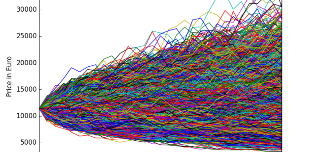
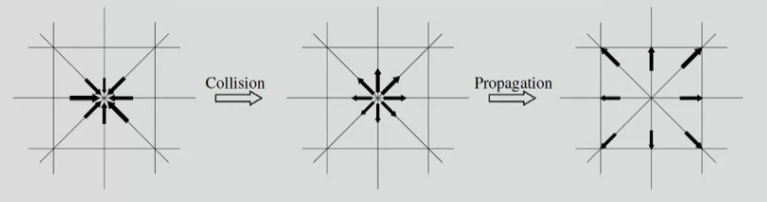
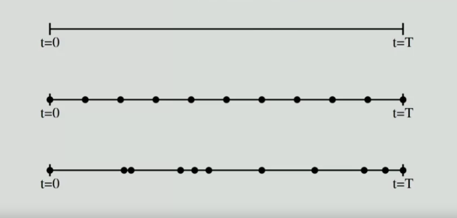

1 Introducción
1.1 Conceptos Generales
Bienvenido a los apuntes
ideas introductorias de modelación de fenomenos naturales
objetivos
aprender a modelar fenomenos naturales
introducir algunas tecnicas de modelado
mostrar como estos modelos pueden ser simulados en un computador (in-silico lab, numerical experiments)
aprender sobre ciencia a travás de modelado
que procesos nos itneresa modelar: físicos, astrofísicos, químicos, climáticos; ciencias mbientales, como ríos y volcanes; biologicos, crecimiento de teguido, patrones de células animales etc; ecosistemas, competencias y sinergia entre especies; finanzas y ciencias sociales, trafico, movimiento peatonal etc.

Que es un modelo
Es una simulacipon de la realidad, una representación. Un modelo es una abstracción simplificada de la realidad, que nos permite describirla mejor y entenderla con más claridad
es una abstracción en la cual solo los ingredientes principales se retienen, de acuerdo a una pregutna acerca del sistema.
es una representacipon de un fenomeno en un lenguaje matemático o de programación.
una descripcion basada en coputacion ofrece un nuevo lenguaje, una nueva metodologia para abordar problemas científicos, más alla de la vista que ofrecen los métdos numéricos tradicionales y atraves de campos en los cuales estos métdos son más difíciles de aplicar.
la modelación y simulacion son una parte central de las ciencias computacionales, pues son una respuesta a cuestiones científicas a resolver. aca convergen física, matemáticas, ciencias de lacomputacion, biología, economía, etc.
1.2 Modelación y Simulación
un modelo sirve para describir, clasificar, pero mayormente para entender, predecir y controlar un fenómeno.
entender un buen modelo no es simple. Varios modelos pueden ser necesarios para estudiar diferentes aspectos de un mismo fenómeno.
Todo debiese ser hecho tan simple como sea posible pero no demasiado simple
- A. Einstein
un mismo sistema puede ser descrito en distintos niveles o escalas de realidad, diferentes métodos se aplican depeidneido de éstos.
atomos, moléculas, elementos de fluido, campos de presion, clima
celulas, tejidos, organos, seres vivos
partes mecánicas, tráfico, personas etc.
debemos identificar los ignredeientes importantes para las interacciones de interes, y comunmente, es buena idea elegir un modelo a una escala un poco más inferior que la escala que queremos modelar para abordar una pregunta de investigacion.
Ilustremos esta idea de que para un mismo sistema podemos elegir distintas escalas de modelación con un problema de fluidos
La ecuación diferencial parcial para un flujo de un fluido es
\[ \partial_t u + (u\cdot \nabla)u = -\frac{1}{\rho}\nabla p+ \nu \nabla^2 u \]Podemos pasar de esta ecuación de derivadas parciales (que en terminos práctivos es muy dificil resolver) a un sistema discreto y obtener una solución numérica.
\[ \text{Fenómeno}\rightarrow \text{PDE} \rightarrow \text{discretización} \rightarrow \text{solución numérica} \]
Sin embargo hay propuestas para abordar este fenómeno a nivel computacional: como sabemos que el fluido está hecho de moléculas, podríamos implemente tener un modelo con moléculas abstractas y una interacción abstracta entre esas moléculas.
\[ \text{Fenómeno} \rightarrow \text{modelo computacional} \]
Las moléculas chocan entre sí y debido a la colisión, rebotan en nuevas direcciones y se mueven en el espacio. Es una forma muy abstracta de entenderlo pero resulta ser una excelente forma de modelar. Hablaremos más de esto más adelante.

algunos ejemplos de metodos de modelación
N-body systems, dinamica molecular
ecuaciones matemáticas, ODE, PDE
Métodos de montecarlo (equilibrio, dinámico y cinético)
Cellular automata y Lattice-Boltzmann
sistemas multi-agente
eventos discretos
redes complejas.
Una vez que el modelo es especificado, lo programamos, lo corremos (muchas veces) y estudiamos los resultados). Es un universo virtual basado en computadores.
para ello neesitamos entender programas computacionales, softwares de ingeniería, algoritmos, data-structures, hardware, optimizacion de código, data análisis.
- El progrma debe ser verificado (si realmente se implementó el modelo)
Debe ser validado (comparado con benchmark)
Tener suficiiente conocimiento del fenómeno a estudiar
1.3 Modelando tiempo y Espacio
Los procesos naturales ocurren en el espacio y evolucionan en el tiempo (es decir, espacial extendido en sistemas dinámicos).
Por ejemplo, la temperatura atmosférica es diferente de un lugar a otro y cambia en el tiempo; un auto en una carretera cambia posición en el tiempo. A veces sólo es interesante la evolución de una cantidad en el tiempo, independiente de los cambios de lugar (como es el caso de estudios financieros, por ejemplo). Otras veces un proceso es estacionario, por lo que nos importará solo cambios en el espacio.
Para capturar las dimensiones temporales en un modelo, hay varias maneras:
El tiempo requiere valores reales. Sólo modelos matemáticos pueden tratar con esta aproximación ( como ecuaciones diferenciales).
Podemos discretizar los valores en el computador. la duración del proceso es separada en pequeños intervalos de tiempo \(\Delta t\) y vemos los cambios en el sistema en cada uno de esos intervalos \(t_0 = 0, t_1=\Delta t, \cdots , t_n = n\Delta t\). De esta manera el tiempo es discretizado, pero el proceso completo está siendo seguido continuamente durante su ejecución.
Por otro lado, podemos poner foco en algunos momentos interesantes del proceso. Por ejemplo, en una fila, sólo nos importará cuando un evento (una atención) ocurra. En tal caso, el tiempo \(t\) en el que ocurre un evento puede ser cualquier valor real. Esto sae llama aproximación de Simulación de eventos discretos (DES por sus siglas en ingles).
Las dos formas de entender tiempo podemos verlas en la siguiente figura: 
Ahora bien, para modelar el espacio, consideramos las aproximaciones Euleriana y Lagrangiana. Al igual que en el tiempo, tenemos varias opciones:
- Tomar el punto de vista de un observador que se instala en un lugar fijo \(\vec{x}\) y graba lo que observa. Por ejemplo, la presión atmosférica local \(p(\vec{x}, t)\), o el número de autos que pasan cada minuto. Esto se llama aproximación Euleriana. El espacio puede ser contínuo (en modelos matemáticos) o discreto en forma de células.
- La aproximación Lagrangiana, por otro lado, usa la posición de cada objeto (incluyendo al observador) como función del tiempo. Por ejemplo, emovimiento de la luna puede ser descrita por su propia trayectoria \(\vec{x}(t)\), donde es una variable continua, en un modelo de tráfico podemos obtener la posición de cada auto en el tiempo. Por tanto, el observador toma el punto de vista de los objetos en movimiento.
En muchos sistemas no importa mucho las posiciones espaciales de los componentes en un sistema, sino cómo estos componentes interactúan entre ellos. Esto es el caso de sistemas sociales, donde (por ejemplo) dos personas pueden estar lejos y aún así comunicarse enter ellas.
El agente en un modelo económico puede ser representado así como un grafo (o red compleja), en la que pares de agentes intercambian información, dinero, bienes, etc. Ahora bien, un grafo puede ser dinámico, con creación y destrucción de distintos links.
[citar lgun modelo de propagación de opinion (for instance, Lino Velasquez, UNIGE]
Para este caso de redes complejas,
Es un campo de rápido desarrollo.
Una topolo´gia de grafos impone una rica estructura espacial donde las restricciones son dinámicas.
Muchas cuantificaciones caracterizan la topología del grafo y pueden ser relacionadas a propiedades globales del sistema: grados de distribución, coeficientes de clustering, mediciones de tendencia central, asortatividad, etc.